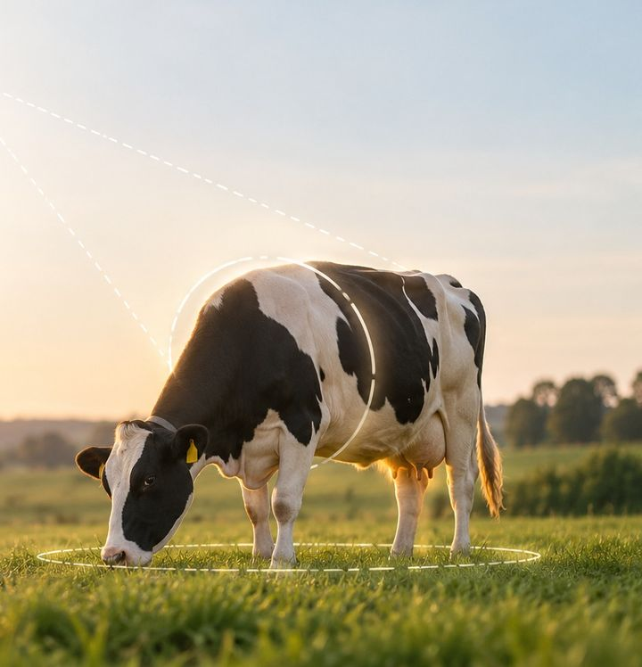
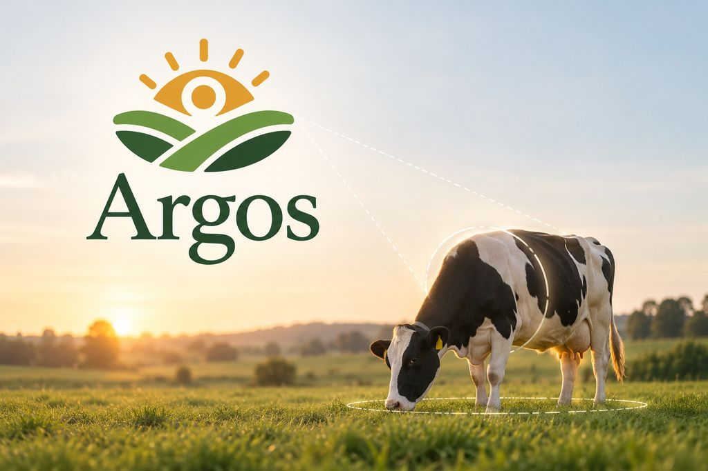

Condición corporal · visión artificial
La inteligencia artificial llega al campo.
Evaluá la condición corporal de tu ganado a partir de una fotografía. Simple, rápido e inteligente.
Una foto desde atrásResultado en segundosEscala BCS 1–5

Analizar
Conocé la condición corporal de tu vaca
Tomá una foto desde atrás o seleccioná una imagen de tu dispositivo.
- Foto
- Análisis
- Resultado
Número de caravana o ID interno. Así queda registrada en el rodeo.
o arrastrá una foto hasta acá
JPG, PNG o WebP · hasta 20 MB
Cómo sacar la foto
- Ubicate detrás de la vaca, a una distancia segura, con el celular por encima de la cadera.
- Asegurate de que la grupa y las caderas sean visibles.
- Evitá imágenes borrosas u oscuras.
Protocolo de captura recomendado
- Vaca de atrás, cámara por encima de la cadera (brazo en alto o desde arriba del tubo/brete), apuntando hacia abajo unos 30–60°.
- Que se vean la base de la cola, los isquiones, los ilíacos y, si se puede, la línea del lomo.
- Una sola vaca centrada, sin la cola tapando la zona y con buena luz.
Vaca: —
Argos está analizando la imagen…
Condición corporal estimada
—/ 5
Rango validado 3.25–4.25Intervalo (90%)
- Intervalo (90%)
- —
- Confianza del modelo
- —
Ver distribución del modelo
Qué se observa en la foto
Argos está mirando la foto…
¿Cuánto te cuesta esta condición?
Supuestos del tambo
Estimación automatizada de apoyo; no reemplaza la evaluación de un técnico.
Cómo funciona
Tres pasos, una foto
-
Tomá una fotografía
Desde atrás y por encima de la cadera, con la grupa y las caderas a la vista.
-
Argos la analiza con IA
Detecta la vaca, revisa que la foto sirva y un modelo de visión artificial estima su condición corporal.
-
Conocé la condición estimada
Un BCS en la escala 1–5 con su intervalo, guardado con el ID de la vaca para seguir su evolución en el rodeo.

Sobre Argos
Un segundo par de ojos para el manejo del rodeo
Seguir la condición corporal ayuda a anticipar decisiones de alimentación y manejo. Argos lo hace más frecuente y más fácil: una foto, un número y un registro por vaca. La decisión sigue siendo del productor y del técnico.
- Historial por vaca. Cada análisis queda con su ID, la foto y la fecha, y el rodeo muestra la evolución.
- Rechaza las fotos que no sirven. Si no detecta una vaca o la imagen está oscura o borrosa, lo dice en vez de inventar un número.
- Claro con sus límites. Entrenado con fotos de vacas lecheras desde atrás y arriba; validado entre BCS 3.25 y 4.25.